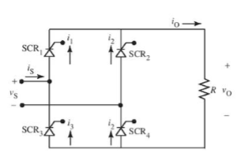
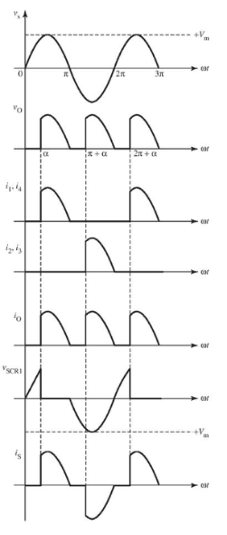
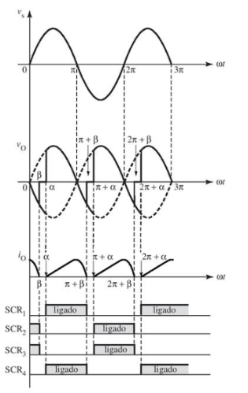
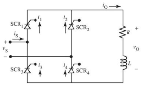
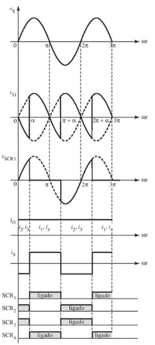
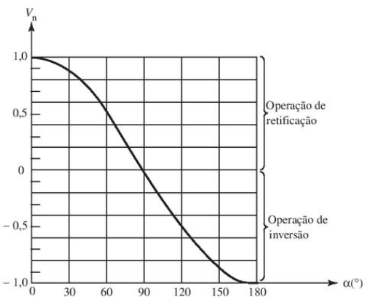
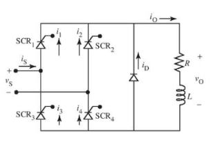
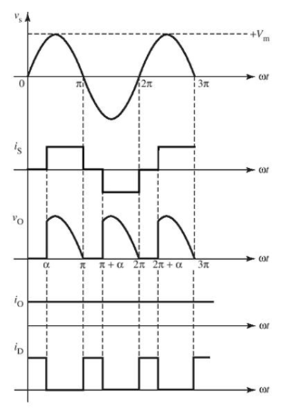

Retificador de Onda Completa em Ponte
Os SCRs do retificador de onda completa em ponte são controlados e disparados em pares, com um ângulo de retardo igual a (alpha), resultando na formação de uma onda completa de corrente e tensão, conforme representado nas figuras abaixo.
 Com carga indutiva, a corrente na carga tende a persistir, uma vez que o indutor induz uma tensão oposta ao aumento ou diminuição da corrente, fazendo com que os SCRs continuem conduzindo mesmo quando a tensão tenha caído para zero. Nesse cenário, a corrente continua a ser conduzida, mesmo quando os SCRs têm sua tensão invertida.
Se a indutância for baixa ou o ângulo de retardo (alpha) for mantido alto, a corrente de saída DC atingirá zero a cada semiciclo, resultando em uma situação na qual nenhum dos SCRs conduz, caracterizando uma corrente não contínua.
Se a indutância for maior ou se (alpha) for menor, a corrente de carga não poderá atingir zero e continuará conduzindo de maneira contínua.
 Durante o semiciclo positivo, SCR1 e SCR4 conduzem, enquanto SCR2 e SCR3 estão inversamente polarizados. Durante a inversão da polarização para que SCR1 e SCR4 desliguem, a corrente da carga flui da mesma maneira até o acionamento dos SCR2 e SCR3.
Uma das características desse modelo é a sua capacidade de 'operação em dois quadrantes', permitindo que a carga varie entre potência de carga DC e AC, sendo denominado de 'conversor completo'.
Se um diodo de retorno for conectado em paralelo com a carga, o circuito poderá operar apenas como retificador, pois o diodo inibirá valores negativos e adicionará uma rota extra para o fluxo de corrente na carga, com três opções possíveis: SCR1 e SCR4, SCR2 e SCR3, e o diodo D.
Devido ao diodo adicional, quando o diodo D estiver diretamente polarizado com tensões negativas, a tensão de carga será
 